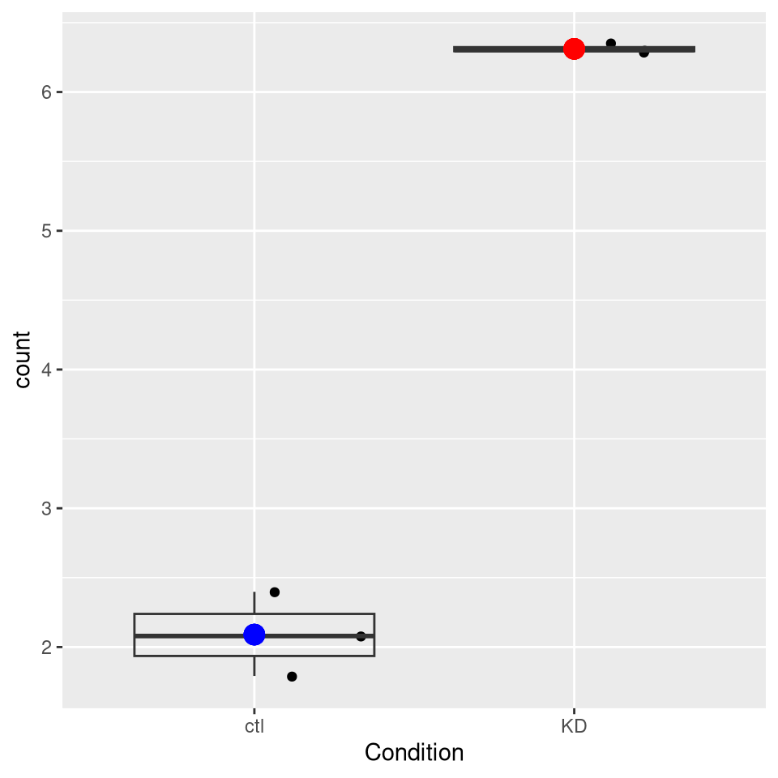
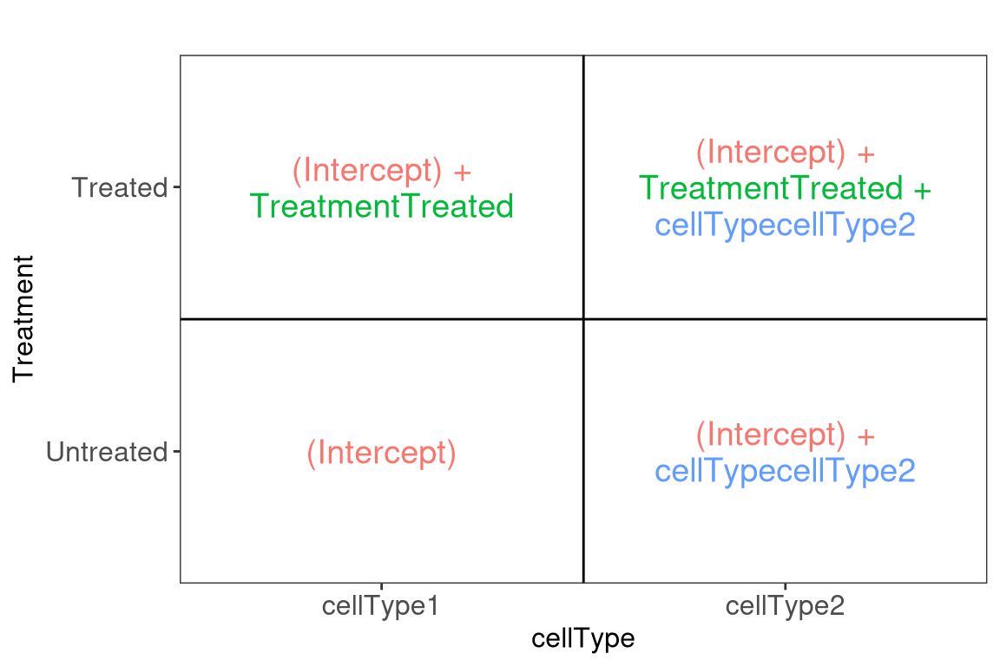
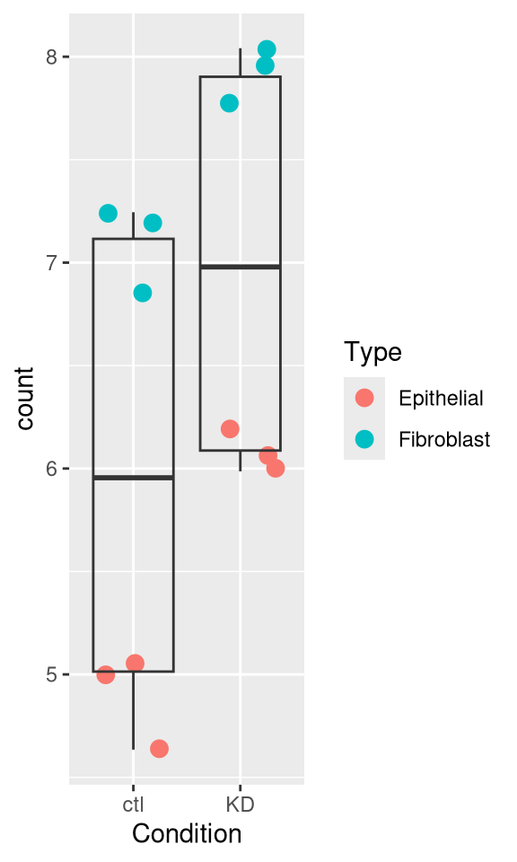
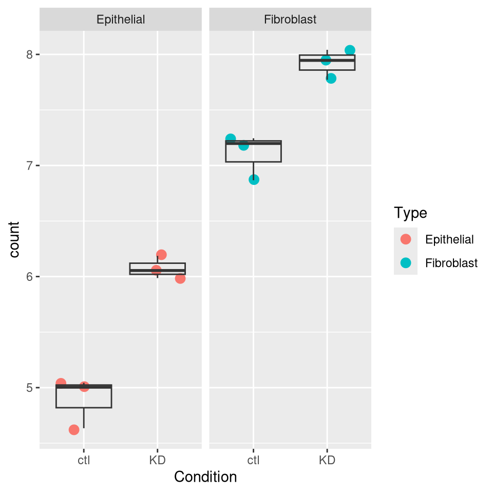
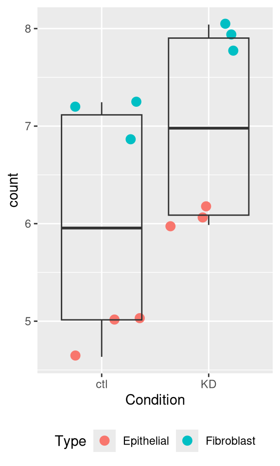
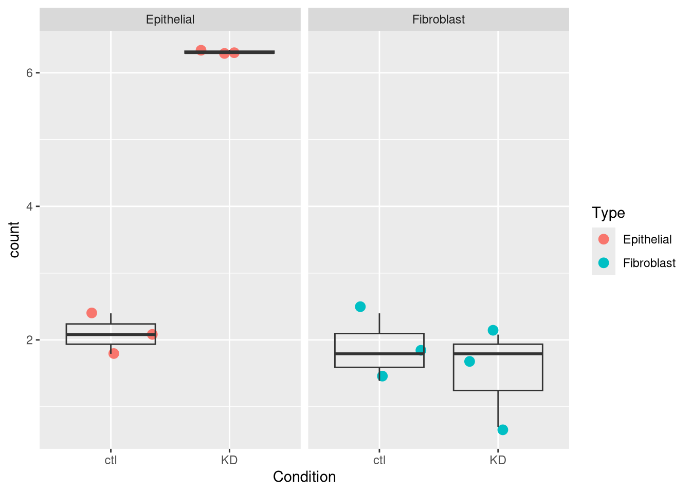
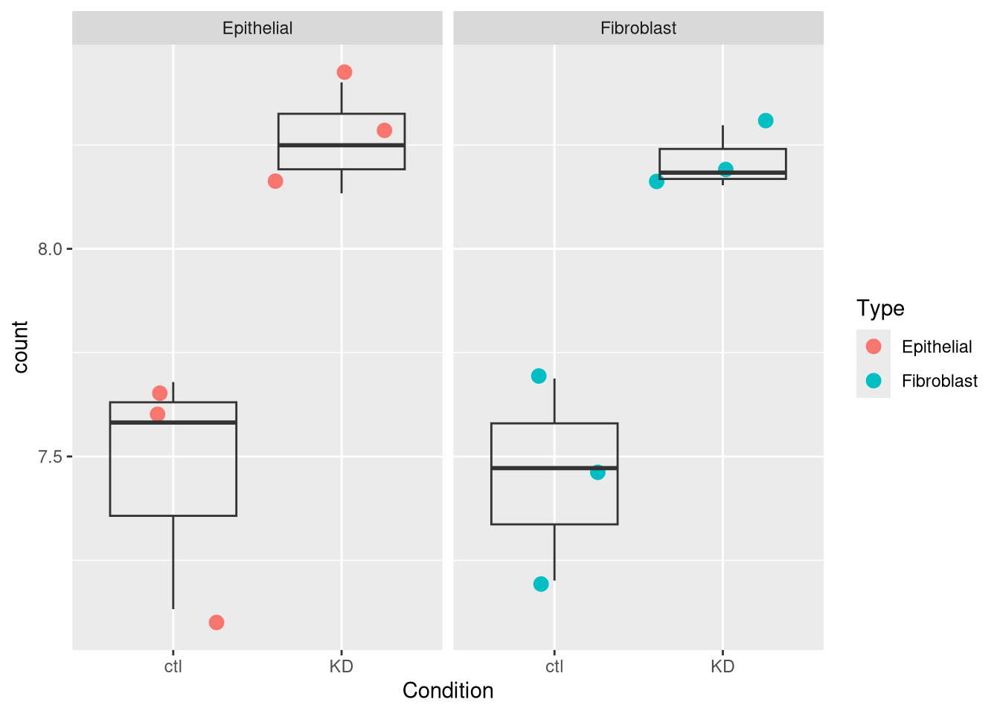

Chapter 3 Linear Models
Objectives
Explore linear models
Learn how the experimental design is translated into a statistical model
Learn how to interpret coefficients
3.1 Multifactorial design and linear models
The outcome of an experiment, such as a gene expression level in the case of an RNA-seq, can be seen as the sum of several factors:
- treatments effects (these are likely the effects you actually want to study)
- biological effects (representing natural biological differences between samples that you might also have to consider)
- technical effects (that come from the experimental process itself and that could potentially influence the measurements)
- and lastly, outcome will also reflect an error, which represent the random variability (or experiment noise) that cannot be explain be any of the known factors.

(figure from Lazic (2017)).
A linear model provides a mathematical framework to describe and quantify the contribution of these different factors to the observed outcome.
3.2 Single-factor design
Let’s start by a simple design, and let’s say we have the gene expression values of 3 control samples and 3 samples treated with a drug, assuming that there is no other biological effect or batch effect to consider.
3.2.1 Defining the linear model
We can use the following linear model to model the expression values:
\[y = \beta_0 + \beta_1 . x\]
In this equation,
\(y\) would be the measured expression level of a gene
the design factor \(x\) is a binary indicator variable representing the two groups of our experiment. It will take the value of 0 when considering the control samples, and a value of 1 when considering treated samples.
When considering a control sample, the \(x\) factor is set to 0.
The \(\beta_1 . x\) term is hence equal to 0, so the equation can be written:
\[y = \beta_0\]
This means that the \(\beta_0\) term represents the expression level of the gene
in control samples, this coefficient is usually called the intercept.
When considering a treated sample, the \(x\) factor is set to 1.
The equation becomes:
\[y = \beta_0 + \beta_1\]
Assuming our expression values are in a log scale then
\[\beta_1 = y - \beta_0 \] \[\beta_1 = log(expression_{Treated\_cells}) - log(expression_{Control\_cells})\]
\[\beta_1 = log(\frac{expression_{Treated\_cells}}{expression_{Control\_cells}})\]
The \(\beta_1\) term represents hence the logFoldchange between the treated
and the control samples (the treatment effect).
3.2.2 Estimating coefficients and testing their significance
\(\beta_0\) and \(\beta_1\) coefficients can be estimated from the data using the expression values in the control and in the treated samples.
A statistical test can then be applied, to test if the \(\beta_1\) coefficient
(the logFC due to the treatment effect) is significantly different from 0.
The null hypothesis is that there is no difference across the sample groups, which is the same as saying that the \(\beta_1\) = 0.
- \(H_0\): \(\beta_1 = 0\) (the logFC = 0)
- \(H_1\): \(\beta_1 \neq 0\) (the logFC \(\neq\) 0)
3.2.3 Example
We are going to use a subset of our previous dataset as a toy example. Let’s focus only on the gene ZBED2 in Epithelial cell type, and use the log-transformed expression values.
se <- readRDS("data/se.rds")
gene_count <- as_tibble(assay(se["ZBED2", se$Type == "Epithelial"]),
rownames = "gene") |>
pivot_longer(names_to = "sample",
values_to = "count",
-gene) |>
mutate(count = log1p(count)) |>
full_join(as_tibble(colData(se[, se$Type == "Epithelial"])))
gene_count## # A tibble: 6 × 7
## gene sample count Type Condition university group
## <chr> <chr> <dbl> <chr> <chr> <chr> <chr>
## 1 ZBED2 Epi_ctl1 2.40 Epithelial ctl UCLouvain Epithelial_ctl
## 2 ZBED2 Epi_ctl2 1.79 Epithelial ctl UCLouvain Epithelial_ctl
## 3 ZBED2 Epi_ctl3 2.08 Epithelial ctl UCLouvain Epithelial_ctl
## 4 ZBED2 Epi_KD1 6.29 Epithelial KD UCLouvain Epithelial_KD
## 5 ZBED2 Epi_KD2 6.30 Epithelial KD UCLouvain Epithelial_KD
## 6 ZBED2 Epi_KD3 6.34 Epithelial KD UCLouvain Epithelial_KDAssuming the expression values follow a normal distribution (even though,
as we’ll see later, this isn’t actually true for RNAseq data!), let’s use the
lm() function to fit a linear model to compare KD to control cells. We want to
model the counts as a function of the Condition factor.
In this case the design of our experiment would be :
\[design \sim Condition\]
##
## Call:
## lm(formula = count ~ Condition, data = gene_count)
##
## Coefficients:
## (Intercept) ConditionKD
## 2.090 4.221The lm() function has estimated the coefficients of the linear
model:
- The estimate for the \(\beta_0\) coefficient (the
Intercept) is 2.09 - The estimate for the \(\beta_1\) coefficient (annotated as the
ConditionKDcoefficient) is 4.221
We can visualise this linear model with:
gene_count |>
ggplot(aes(x = Condition, y = count)) +
geom_jitter() +
geom_boxplot(alpha = 0) +
geom_point(aes(x = "ctl", y = coefficients(mod1)[1]),
color = "blue", size = 4) +
geom_point(aes(x = "KD", y = coefficients(mod1)[1] + coefficients(mod1)[2]),
color = "red", size = 4)
And indeed, we see that
- the intercept (the \(\beta_0\) coefficient) corresponds to the mean
level of the gene in the
ctlgroup (the blue dot) - the sum of \(\beta_0\) and \(\beta_1\) coefficients (the intercept + the
logFC) corresponds to the mean expression level of the gene in the
KDgroup (the red dot)
We can also extract the p-value associated with the ConditionKD
coefficient:
##
## Call:
## lm(formula = count ~ Condition, data = gene_count)
##
## Residuals:
## 1 2 3 4 5 6
## 0.308197 -0.297939 -0.010257 -0.024834 -0.008214 0.033048
##
## Coefficients:
## Estimate Std. Error t value Pr(>|t|)
## (Intercept) 2.0897 0.1244 16.8 7.36e-05 ***
## ConditionKD 4.2211 0.1759 24.0 1.79e-05 ***
## ---
## Signif. codes: 0 '***' 0.001 '**' 0.01 '*' 0.05 '.' 0.1 ' ' 1
##
## Residual standard error: 0.2154 on 4 degrees of freedom
## Multiple R-squared: 0.9931, Adjusted R-squared: 0.9914
## F-statistic: 575.9 on 1 and 4 DF, p-value: 1.788e-05We can see that the coefficient ConditionKD is highly significant.
3.3 Two-factor design
Let’s consider a slightly more complex design. We now have the gene expression values of 6 control and 6 treated samples, but the experiment was conducted in two different cell types (with 3 control and 3 treated samples in each cell type).
To take into account the treatment effect while controlling the cell type effect, we should use the following design: \[design \sim Treatment + cellType\]
In the following linear model:
\[y = \beta_0 + \beta_1 . x_1 + \beta_2 . x_2\]
we could rewrite this equation as:
\[y = \beta_0 + Treatment. x_1 + cellType . x_2\]
In this equation:
The \(\beta_0\) term represents the
intercept, i.e, the expression level of the gene in the reference cell type, for instance the untreated cellType1.The design factor \(x_1\) is a binary indicator variable representing the two treatment conditions of our experiment. It will take the value of 0 if we are considering the untreated samples, and a value of 1 when considering treated samples.
The
Treatmentterm represents the logFoldchange due to treatment.The design factor \(x_2\) is another binary indicator variable representing the two cell types of our experiment. It will take the value of 0 if we are considering cellType1, and a value of 1 when considering cellType2.
The
cellTypeterm represents the logFoldchange associated with the cell type effect.
The following figure (generated with the ExploreModelMatrix package)
illustrates the value of the linear predictor of a linear model for
each combination of input variables.
## [[1]]
From this figure, we can see how the genes log expression values are modeled in the different samples:
- In
untreated cellType1: \(y\) = \(\beta_0\) - In
treated cellType1: \(y\) = \(\beta_0\) + Treatment - In
untreated cellType2: \(y\) = \(\beta_0\) + cellType - In
treated cellType2: \(y\) = \(\beta_0\) + Treatment + cellType
3.3.1 Example
Let’s subset the original dataset as below to keep only on the gene DRAM1.
gene_count <- as_tibble(assay(se["DRAM1"]), rownames = "gene") |>
pivot_longer(names_to = "sample", values_to = "count", -gene) |>
mutate(count = log1p(count)) |>
full_join(as_tibble(colData(se)))## Joining with `by = join_by(sample)`## # A tibble: 12 × 7
## gene sample count Type Condition university group
## <chr> <chr> <dbl> <chr> <chr> <chr> <chr>
## 1 DRAM1 Epi_ctl1 4.63 Epithelial ctl UCLouvain Epithelial_ctl
## 2 DRAM1 Epi_ctl2 5.00 Epithelial ctl UCLouvain Epithelial_ctl
## 3 DRAM1 Epi_ctl3 5.04 Epithelial ctl UCLouvain Epithelial_ctl
## 4 DRAM1 Epi_KD1 5.99 Epithelial KD UCLouvain Epithelial_KD
## 5 DRAM1 Epi_KD2 6.19 Epithelial KD UCLouvain Epithelial_KD
## 6 DRAM1 Epi_KD3 6.05 Epithelial KD UCLouvain Epithelial_KD
## 7 DRAM1 Fib_ctl1 7.20 Fibroblast ctl UCLouvain Fibroblast_ctl
## 8 DRAM1 Fib_ctl2 6.87 Fibroblast ctl UCLouvain Fibroblast_ctl
## 9 DRAM1 Fib_ctl3 7.24 Fibroblast ctl UCLouvain Fibroblast_ctl
## 10 DRAM1 Fib_KD1 8.04 Fibroblast KD UCLouvain Fibroblast_KD
## 11 DRAM1 Fib_KD2 7.77 Fibroblast KD UCLouvain Fibroblast_KD
## 12 DRAM1 Fib_KD3 7.95 Fibroblast KD UCLouvain Fibroblast_KDWe will start by fitting a linear model that only accounts for the Condition effect, ignoring the cell type effect.
Our design would hence be \[design \sim Condition\]
##
## Call:
## lm(formula = count ~ Condition, data = gene_count)
##
## Residuals:
## Min 1Q Median 3Q Max
## -1.36396 -0.96514 -0.01872 0.97227 1.24625
##
## Coefficients:
## Estimate Std. Error t value Pr(>|t|)
## (Intercept) 5.9987 0.4595 13.055 1.32e-07 ***
## ConditionKD 0.9991 0.6498 1.538 0.155
## ---
## Signif. codes: 0 '***' 0.001 '**' 0.01 '*' 0.05 '.' 0.1 ' ' 1
##
## Residual standard error: 1.126 on 10 degrees of freedom
## Multiple R-squared: 0.1912, Adjusted R-squared: 0.1103
## F-statistic: 2.364 on 1 and 10 DF, p-value: 0.1552The Condition Effect is not significant.
Question
Try to figure our what is wrong with this model
Solution
The model only accounts for the Condition effect. It ignores the cell type effect.
gene_count |>
ggplot(aes(x = Condition, y = count)) +
geom_jitter(size = 3, aes(color = Type)) +
geom_boxplot(alpha = 0) 
Epithelial and Fibroblasts count values are mixed, even though they clearly don’t start at the same baseline.
Question
Use the lm() function to fit a linear model that would now account
for Condition and cell type.
Interprete the results.
Solution
##
## Call:
## lm(formula = count ~ Condition + Type, data = gene_count)
##
## Residuals:
## Min 1Q Median 3Q Max
## -0.35059 -0.08495 0.02444 0.09905 0.23288
##
## Coefficients:
## Estimate Std. Error t value Pr(>|t|)
## (Intercept) 4.98532 0.09783 50.957 2.17e-12 ***
## ConditionKD 0.99909 0.11297 8.844 9.85e-06 ***
## TypeFibroblast 2.02674 0.11297 17.941 2.36e-08 ***
## ---
## Signif. codes: 0 '***' 0.001 '**' 0.01 '*' 0.05 '.' 0.1 ' ' 1
##
## Residual standard error: 0.1957 on 9 degrees of freedom
## Multiple R-squared: 0.978, Adjusted R-squared: 0.9731
## F-statistic: 200 on 2 and 9 DF, p-value: 3.475e-08The coefficients ConditionKD (representing the KD Effect) and the
coefficient TypeFibroblast, representing the cell type Effect, are
both significant.
gene_count |>
ggplot(aes(x = Condition, y = count)) +
geom_jitter(size = 3, aes(color = Type)) +
geom_boxplot(alpha = 0) +
facet_wrap(~ Type)
The model now adjusts for the baseline difference between epithelial and fibroblast cell types. It prevents cell type differences from biasing the condition effect.
3.4 Design with interaction
Coming back to the previous experimental design were we considered 3 controls and 3 treated samples across 2 different cell types. An interaction term could be added to the linear model, to model a treatment effect that would differ across cell types.
Our design would hence be: \[design \sim Treatment*cellType\]
which is equivalent to \[design \sim Treatment + cellType + Treatment*cellType\]
The linear model could be written
\[y = \beta_0 + \beta_1 . x_1 + \beta_2 . x_2 + \beta_{12}.x_1.x_2.\]
We could rewrite this equation as:
\[y = \beta_0 + Treatment. x_1 + cellType . x_2 + Treatment.cellType.x_1.x_2\]
In this equation:
- Rhe \(\beta_0\) term represents the
intercept, i.e, the expression level of the gene in the reference cell type, for instance the untreated cells in cellType1. - The design factor \(x_1\) will take the value of 0 if we are considering untreated samples, and a value of 1 when considering treated samples.
- The
Treatmentterm represents the treatment effect in the reference cell type. In this case it would represent the logFoldchange between treated cellType1 and untreated cellType1. - The design factor \(x_2\) will take the value of 0 if we are considering cellType1, and a value of 1 when considering cellType2.
- The
cellTypeterm represents the logFoldchange associated with the cell type effect in the reference treatment. In this case it would represent the cell type effect in untreated cells. - The
Treatment.cellTypeterm represents the treatment effect that would be different in cellType2 compared to cellType1. This term will only be considered in the equation when we are referring to treated cells from cellType2 (i.e. when \(x_1\) = 1 and \(x_2\) = 1)
The following figure (generated with the ExploreModelMatrix package)
illustrates the value of the linear predictor of a linear model for
each combination of input variables.
## [[1]]
From this figure, we can see how the genes log expression values are modeled in the different samples:
- In
Untreated cellType1: \(y\) = \(\beta_0\) - In
Treated cellType1: \(y\) = \(\beta_0\) + Treatment - In
Untreated cellType2: \(y\) = \(\beta_0\) + cellType - In
Treated cellType2: \(y\) = \(\beta_0\) + Treatment + cellType + Treatment.cellType1
3.4.1 Examples
Question
Let’s subset the original dataset to keep only on the gene ZBED2.
gene_count <- as_tibble(assay(se["ZBED2"]), rownames = "gene") |>
pivot_longer(names_to = "sample", values_to = "count", -gene) |>
mutate(count = log1p(count)) |>
full_join(as_tibble(colData(se)))
gene_count## # A tibble: 12 × 7
## gene sample count Type Condition university group
## <chr> <chr> <dbl> <chr> <chr> <chr> <chr>
## 1 ZBED2 Epi_ctl1 2.40 Epithelial ctl UCLouvain Epithelial_ctl
## 2 ZBED2 Epi_ctl2 1.79 Epithelial ctl UCLouvain Epithelial_ctl
## 3 ZBED2 Epi_ctl3 2.08 Epithelial ctl UCLouvain Epithelial_ctl
## 4 ZBED2 Epi_KD1 6.29 Epithelial KD UCLouvain Epithelial_KD
## 5 ZBED2 Epi_KD2 6.30 Epithelial KD UCLouvain Epithelial_KD
## 6 ZBED2 Epi_KD3 6.34 Epithelial KD UCLouvain Epithelial_KD
## 7 ZBED2 Fib_ctl1 2.40 Fibroblast ctl UCLouvain Fibroblast_ctl
## 8 ZBED2 Fib_ctl2 1.39 Fibroblast ctl UCLouvain Fibroblast_ctl
## 9 ZBED2 Fib_ctl3 1.79 Fibroblast ctl UCLouvain Fibroblast_ctl
## 10 ZBED2 Fib_KD1 2.08 Fibroblast KD UCLouvain Fibroblast_KD
## 11 ZBED2 Fib_KD2 0.693 Fibroblast KD UCLouvain Fibroblast_KD
## 12 ZBED2 Fib_KD3 1.79 Fibroblast KD UCLouvain Fibroblast_KDFit a linear model with an interaction between condition and type.
Interprete the results.
Solution
##
## Call:
## lm(formula = count ~ Condition * Type, data = gene_count)
##
## Residuals:
## Min 1Q Median 3Q Max
## -0.82830 -0.12465 -0.00924 0.27978 0.55799
##
## Coefficients:
## Estimate Std. Error t value Pr(>|t|)
## (Intercept) 2.0897 0.2719 7.685 5.82e-05 ***
## ConditionKD 4.2211 0.3845 10.977 4.22e-06 ***
## TypeFibroblast -0.2310 0.3845 -0.601 0.565
## ConditionKD:TypeFibroblast -4.5583 0.5438 -8.382 3.12e-05 ***
## ---
## Signif. codes: 0 '***' 0.001 '**' 0.01 '*' 0.05 '.' 0.1 ' ' 1
##
## Residual standard error: 0.471 on 8 degrees of freedom
## Multiple R-squared: 0.9627, Adjusted R-squared: 0.9487
## F-statistic: 68.83 on 3 and 8 DF, p-value: 4.691e-06The interaction term is significant. This indicates that the KD effect is significantly different in epithelial cells and fibroblasts.
And indeed looking at the count values, we can see that the KD increases the gene expression level in epithelial cells, but it has no effect in fibroblasts.
gene_count |>
ggplot(aes(x = Condition, y = count)) +
geom_jitter(size = 3, aes(color = Type)) +
geom_boxplot(alpha = 0) +
facet_wrap(~ Type)
Question
As before, subset the original dataset to keep this time only on the gene GOLGA4.
gene_count <- as_tibble(assay(se["GOLGA4"]), rownames = "gene") |>
pivot_longer(names_to = "sample", values_to = "count", -gene) |>
mutate(count = log1p(count)) |>
full_join(as_tibble(colData(se)))## Joining with `by = join_by(sample)`## # A tibble: 12 × 7
## gene sample count Type Condition university group
## <chr> <chr> <dbl> <chr> <chr> <chr> <chr>
## 1 GOLGA4 Epi_ctl1 7.13 Epithelial ctl UCLouvain Epithelial_ctl
## 2 GOLGA4 Epi_ctl2 7.68 Epithelial ctl UCLouvain Epithelial_ctl
## 3 GOLGA4 Epi_ctl3 7.58 Epithelial ctl UCLouvain Epithelial_ctl
## 4 GOLGA4 Epi_KD1 8.13 Epithelial KD UCLouvain Epithelial_KD
## 5 GOLGA4 Epi_KD2 8.25 Epithelial KD UCLouvain Epithelial_KD
## 6 GOLGA4 Epi_KD3 8.40 Epithelial KD UCLouvain Epithelial_KD
## 7 GOLGA4 Fib_ctl1 7.47 Fibroblast ctl UCLouvain Fibroblast_ctl
## 8 GOLGA4 Fib_ctl2 7.20 Fibroblast ctl UCLouvain Fibroblast_ctl
## 9 GOLGA4 Fib_ctl3 7.69 Fibroblast ctl UCLouvain Fibroblast_ctl
## 10 GOLGA4 Fib_KD1 8.15 Fibroblast KD UCLouvain Fibroblast_KD
## 11 GOLGA4 Fib_KD2 8.30 Fibroblast KD UCLouvain Fibroblast_KD
## 12 GOLGA4 Fib_KD3 8.18 Fibroblast KD UCLouvain Fibroblast_KDFit a linear model with an interaction between condition and type.
Interprete the results.
Solution
##
## Call:
## lm(formula = count ~ Condition * Type, data = gene_count)
##
## Residuals:
## Min 1Q Median 3Q Max
## -0.33199 -0.07562 0.00322 0.12283 0.23399
##
## Coefficients:
## Estimate Std. Error t value Pr(>|t|)
## (Intercept) 7.46449 0.11839 63.048 4.45e-12 ***
## ConditionKD 0.79677 0.16744 4.759 0.00143 **
## TypeFibroblast -0.01094 0.16744 -0.065 0.94950
## ConditionKD:TypeFibroblast -0.03899 0.23679 -0.165 0.87331
## ---
## Signif. codes: 0 '***' 0.001 '**' 0.01 '*' 0.05 '.' 0.1 ' ' 1
##
## Residual standard error: 0.2051 on 8 degrees of freedom
## Multiple R-squared: 0.8437, Adjusted R-squared: 0.7851
## F-statistic: 14.4 on 3 and 8 DF, p-value: 0.001373The coefficients ConditionKD (representing the KD Effect) is
significant, but the interaction term is not. This indicates that the
KD Effect is not significantly different between fibroblasts and
epithelial cells.
This is not surprising because the effect is consistent in both cell types
gene_count |>
ggplot(aes(x = Condition, y = count)) +
geom_jitter(size = 3, aes(color = Type)) +
geom_boxplot(alpha = 0) +
facet_wrap(~ Type)